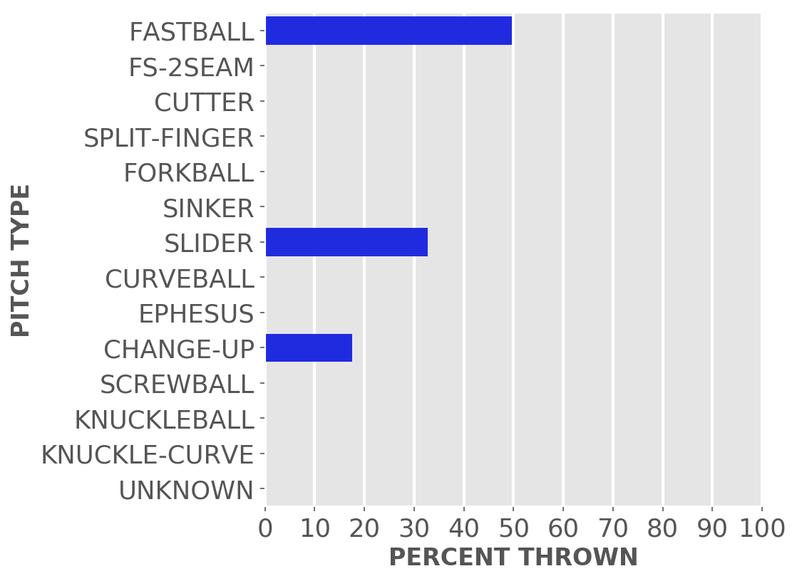
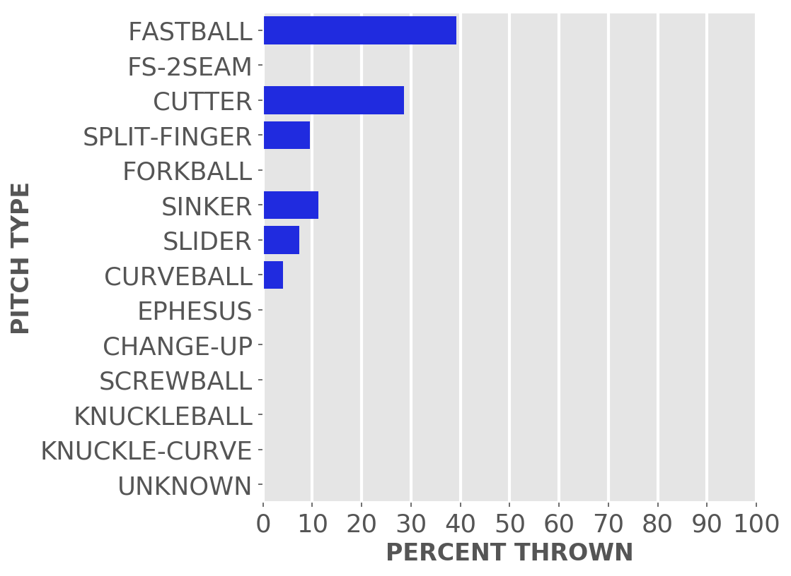
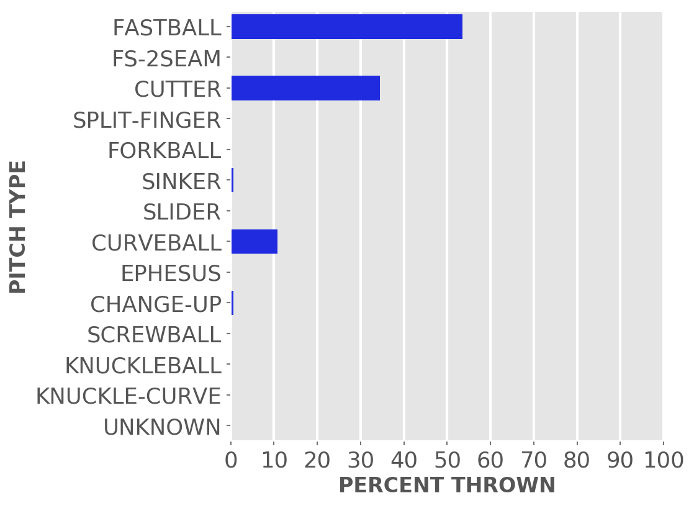
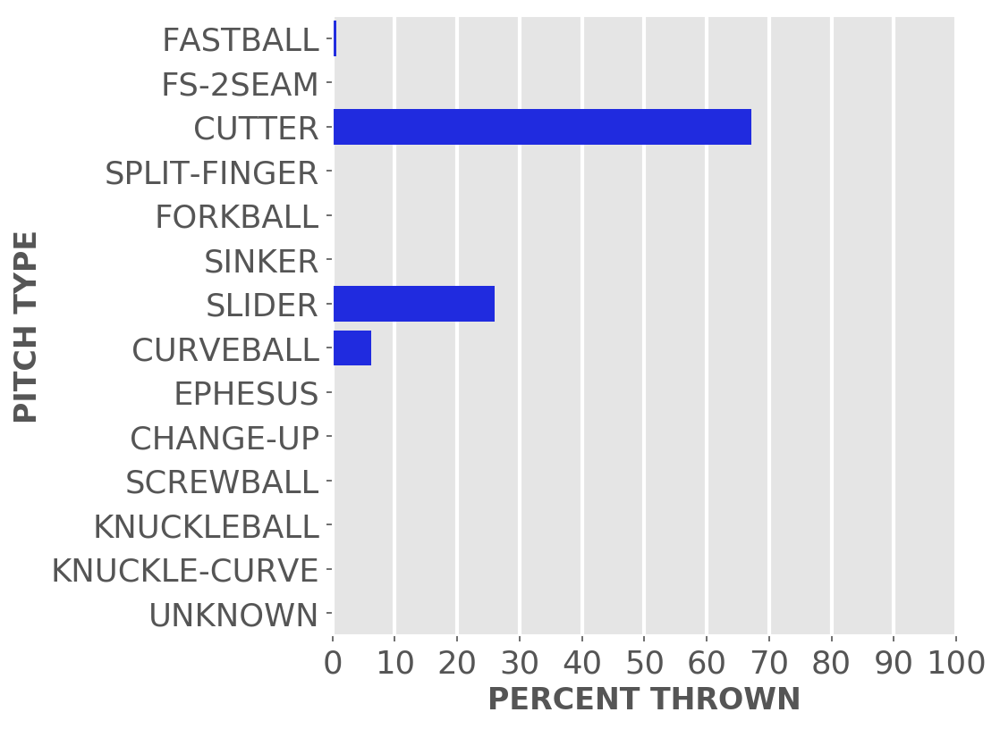
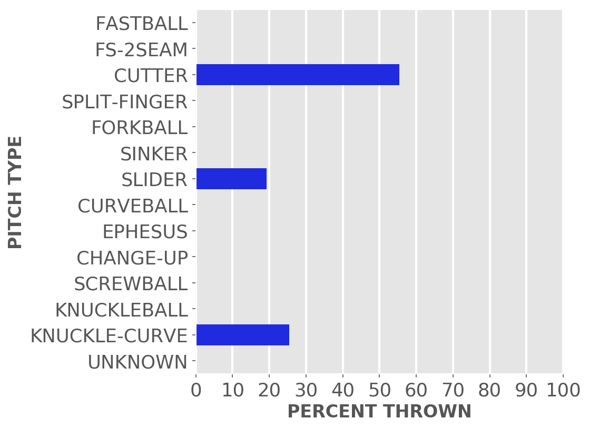

Chicago baseball
Cubs
A little-more-than-casual but not-very-wonky statistical look at the current season
Just enough stats to feed into the anxieties of your typical Cubby fan.
Updated Friday, May 6, at 2:58 p.m. Pybaseball gathers these from Baseball-reference.com.
Games
JUMP TO TOP | BATTERS | PITCHERS
On Wednesday, May 4, the Cubs lost a night game at home against the White Sox, 3 to 4, in 9 innings. The winning pitcher was Giolito, losing pitcher was Hendricks. Save: Hendriks.
Next scheduled game: Friday, May 6, a game at home with the Dodgers.
Summary results by team
| Team | Wins | Loses | Avg. Cubs runs | Avg. runs against |
|---|---|---|---|---|
| Braves | 1 | 2 | 2.67 | 3.67 |
| Brewers | 3 | 3 | 3.67 | 4.83 |
| Pirates | 2 | 4 | 5.5 | 3.17 |
| Rays | 1 | 2 | 3.67 | 5.33 |
| Rockies | 2 | 2 | 5.5 | 5.25 |
| White Sox | 0 | 2 | 2.0 | 3.5 |
Batters
JUMP TO TOP | GAMES | PITCHERS
Click the link under a player's name to get up-to-speed on a player at bat.
Willson Contreras #40, C
| Status (A = active) | A |
| Bats/Throws | R/R |
| Plate appearances | 83 |
| At bats | 72 |
| Hits | 17 |
| Home runs | 2 |
| Batting Avg. | 0.236 |

| Runs | 13 |
| RBI | 7 |
| On-base percent | 0.337 |
| Weighted OBP | 0.335 |
| Slugging % | 0.403 |
| Stolen bases | 0 |
| Caught stealing | 0 |
Other measures
| Weighted runs above avg. (wRAA) | 1.9 |
| Runs Above Replacement (RAR) | 3.5 |
| Fielding RAR | -1.5 |
| Wins above replacement (WAR) | 0.4 |
Clint Frazier #77, LF
| Status (A = active) | D10 |
| Bats/Throws | R/R |
| Plate appearances | 24 |
| At bats | 21 |
| Hits | 3 |
| Home runs | 0 |
| Batting Avg. | 0.143 |

| Runs | 3 |
| RBI | 0 |
| On-base percent | 0.25 |
| Weighted OBP | 0.233 |
| Slugging % | 0.238 |
| Stolen bases | 0 |
| Caught stealing | 0 |
Other measures
| Weighted runs above avg. (wRAA) | -1.3 |
| Runs Above Replacement (RAR) | -1.1 |
| Fielding RAR | 0.0 |
| Wins above replacement (WAR) | -0.1 |
Yan Gomes #7, C
| Status (A = active) | A |
| Bats/Throws | R/R |
| Plate appearances | 36 |
| At bats | 34 |
| Hits | 7 |
| Home runs | 1 |
| Batting Avg. | 0.206 |

| Runs | 3 |
| RBI | 2 |
| On-base percent | 0.25 |
| Weighted OBP | 0.269 |
| Slugging % | 0.353 |
| Stolen bases | 0 |
| Caught stealing | 0 |
Other measures
| Weighted runs above avg. (wRAA) | -1.0 |
| Runs Above Replacement (RAR) | 0.2 |
| Fielding RAR | -0.3 |
| Wins above replacement (WAR) | 0.0 |
Ian Happ #8, CF
| Status (A = active) | A |
| Bats/Throws | S/R |
| Plate appearances | 89 |
| At bats | 72 |
| Hits | 21 |
| Home runs | 2 |
| Batting Avg. | 0.292 |

| Runs | 12 |
| RBI | 11 |
| On-base percent | 0.416 |
| Weighted OBP | 0.374 |
| Slugging % | 0.417 |
| Stolen bases | 0 |
| Caught stealing | 0 |
Other measures
| Weighted runs above avg. (wRAA) | 4.7 |
| Runs Above Replacement (RAR) | 7.4 |
| Fielding RAR | 1.2 |
| Wins above replacement (WAR) | 0.8 |
Michael Hermosillo #32, OF
| Status (A = active) | A |
| Bats/Throws | R/R |
| Plate appearances | 31 |
| At bats | 24 |
| Hits | 2 |
| Home runs | 0 |
| Batting Avg. | 0.083 |
| Runs | 2 |
| RBI | 2 |
| On-base percent | 0.29 |
| Weighted OBP | 0.23 |
| Slugging % | 0.125 |
| Stolen bases | 0 |
| Caught stealing | 0 |
Other measures
| Weighted runs above avg. (wRAA) | -1.8 |
| Runs Above Replacement (RAR) | 0.1 |
| Fielding RAR | 0.6 |
| Wins above replacement (WAR) | 0.0 |
Jason Heyward #22, RF
| Status (A = active) | A |
| Bats/Throws | L/L |
| Plate appearances | 54 |
| At bats | 47 |
| Hits | 11 |
| Home runs | 0 |
| Batting Avg. | 0.234 |

| Runs | 6 |
| RBI | 2 |
| On-base percent | 0.333 |
| Weighted OBP | 0.294 |
| Slugging % | 0.298 |
| Stolen bases | 0 |
| Caught stealing | 0 |
Other measures
| Weighted runs above avg. (wRAA) | -0.4 |
| Runs Above Replacement (RAR) | 0.9 |
| Fielding RAR | -0.1 |
| Wins above replacement (WAR) | 0.1 |
Nico Hoerner #2, 2B
| Status (A = active) | A |
| Bats/Throws | R/R |
| Plate appearances | 79 |
| At bats | 76 |
| Hits | 21 |
| Home runs | 2 |
| Batting Avg. | 0.276 |

| Runs | 5 |
| RBI | 11 |
| On-base percent | 0.304 |
| Weighted OBP | 0.321 |
| Slugging % | 0.421 |
| Stolen bases | 2 |
| Caught stealing | 1 |
Other measures
| Weighted runs above avg. (wRAA) | 1.0 |
| Runs Above Replacement (RAR) | 7.4 |
| Fielding RAR | 3.3 |
| Wins above replacement (WAR) | 0.8 |
Nick Madrigal #1, 2B
| Status (A = active) | A |
| Bats/Throws | R/R |
| Plate appearances | 73 |
| At bats | 68 |
| Hits | 16 |
| Home runs | 0 |
| Batting Avg. | 0.235 |

| Runs | 5 |
| RBI | 2 |
| On-base percent | 0.288 |
| Weighted OBP | 0.261 |
| Slugging % | 0.279 |
| Stolen bases | 1 |
| Caught stealing | 0 |
Other measures
| Weighted runs above avg. (wRAA) | -2.5 |
| Runs Above Replacement (RAR) | 0.8 |
| Fielding RAR | 1.6 |
| Wins above replacement (WAR) | 0.1 |
Rafael Ortega #66, RF
| Status (A = active) | A |
| Bats/Throws | L/R |
| Plate appearances | 57 |
| At bats | 49 |
| Hits | 10 |
| Home runs | 0 |
| Batting Avg. | 0.204 |

| Runs | 6 |
| RBI | 1 |
| On-base percent | 0.304 |
| Weighted OBP | 0.275 |
| Slugging % | 0.286 |
| Stolen bases | 0 |
| Caught stealing | 3 |
Other measures
| Weighted runs above avg. (wRAA) | -1.3 |
| Runs Above Replacement (RAR) | -1.8 |
| Fielding RAR | -0.4 |
| Wins above replacement (WAR) | -0.2 |
Frank Schwindel #18, 1B
| Status (A = active) | A |
| Bats/Throws | R/R |
| Plate appearances | 88 |
| At bats | 83 |
| Hits | 17 |
| Home runs | 2 |
| Batting Avg. | 0.205 |
| Runs | 6 |
| RBI | 9 |
| On-base percent | 0.25 |
| Weighted OBP | 0.254 |
| Slugging % | 0.313 |
| Stolen bases | 0 |
| Caught stealing | 0 |
Other measures
| Weighted runs above avg. (wRAA) | -3.4 |
| Runs Above Replacement (RAR) | -4.0 |
| Fielding RAR | -0.6 |
| Wins above replacement (WAR) | -0.4 |
Seiya Suzuki #27, OF
| Status (A = active) | A |
| Bats/Throws | R/R |
| Plate appearances | 96 |
| At bats | 80 |
| Hits | 20 |
| Home runs | 4 |
| Batting Avg. | 0.25 |

| Runs | 13 |
| RBI | 15 |
| On-base percent | 0.365 |
| Weighted OBP | 0.365 |
| Slugging % | 0.475 |
| Stolen bases | 1 |
| Caught stealing | 0 |
Other measures
| Weighted runs above avg. (wRAA) | 4.4 |
| Runs Above Replacement (RAR) | 4.9 |
| Fielding RAR | -1.2 |
| Wins above replacement (WAR) | 0.5 |
Jonathan Villar #24, 3B
| Status (A = active) | A |
| Bats/Throws | S/R |
| Plate appearances | 59 |
| At bats | 53 |
| Hits | 15 |
| Home runs | 0 |
| Batting Avg. | 0.283 |
| Runs | 8 |
| RBI | 8 |
| On-base percent | 0.322 |
| Weighted OBP | 0.288 |
| Slugging % | 0.321 |
| Stolen bases | 1 |
| Caught stealing | 0 |
Other measures
| Weighted runs above avg. (wRAA) | -0.8 |
| Runs Above Replacement (RAR) | -2.3 |
| Fielding RAR | -3.5 |
| Wins above replacement (WAR) | -0.3 |
Patrick Wisdom #16, 3B
| Status (A = active) | A |
| Bats/Throws | R/R |
| Plate appearances | 85 |
| At bats | 77 |
| Hits | 19 |
| Home runs | 5 |
| Batting Avg. | 0.247 |

| Runs | 14 |
| RBI | 15 |
| On-base percent | 0.306 |
| Weighted OBP | 0.363 |
| Slugging % | 0.532 |
| Stolen bases | 0 |
| Caught stealing | 1 |
Other measures
| Weighted runs above avg. (wRAA) | 3.8 |
| Runs Above Replacement (RAR) | 3.6 |
| Fielding RAR | -2.5 |
| Wins above replacement (WAR) | 0.4 |
Pitchers
Click the link under a player's name to get acquainted with who's on the mound.Click here for a description of these stats and more.
Scott Effross #57, P
| Status (A = active) | A |
| Bats/Throws | R/R |
| Wins | 0 |
| Losses | 1 |
| ERA | 1.59 |
| Caught stealing | 1 |
| Complete games | 0 |
| Shutouts | 0 |
| Saves | 0 |
| Blown saves | 0 |
Pitch types

Fastball = Four Seam and Unclassified Fastballs; FS-2seam = Two Seam Fastballs; Ephesuses are a really slow ball
| Average innings pitched | 1.0 |
| Strikeouts per 9 innings | 9.53 |
| Walks per 9 innings | 0.79 |
| Walks, hits per inning (WHIP) | 0.88 |
| Percent left on base | 60.0 |
| Percent first pitch strike | 63.6 |
Other measures
| Avg. run support | 0.0 |
| Opponents batting average | 0.209 |
| Batting avg. on balls in play | 0.29 |
| Fielding independent pitching | 1.24 |
| Win probability added (WPA) | 0.2 |
| Runs above replacement | 3.1 |
| WAR | 0.3 |
Mychal Givens #60, P
| Status (A = active) | A |
| Bats/Throws | R/R |
| Wins | 1 |
| Losses | 0 |
| ERA | 2.79 |
| Caught stealing | 0 |
| Complete games | 0 |
| Shutouts | 0 |
| Saves | 1 |
| Blown saves | 1 |
Pitch types
Fastball = Four Seam and Unclassified Fastballs; FS-2seam = Two Seam Fastballs; Ephesuses are a really slow ball
| Average innings pitched | 0.9 |
| Strikeouts per 9 innings | 13.97 |
| Walks per 9 innings | 5.59 |
| Walks, hits per inning (WHIP) | 1.55 |
| Percent left on base | 88.2 |
| Percent first pitch strike | 51.2 |
Other measures
| Avg. run support | 0.0 |
| Opponents batting average | 0.243 |
| Batting avg. on balls in play | 0.381 |
| Fielding independent pitching | 3.2 |
| Win probability added (WPA) | 0.02 |
| Runs above replacement | 0.9 |
| WAR | 0.1 |
Kyle Hendricks #28, P
| Status (A = active) | A |
| Bats/Throws | R/R |
| Wins | 1 |
| Losses | 3 |
| ERA | 5.64 |
| Caught stealing | 6 |
| Complete games | 0 |
| Shutouts | 0 |
| Saves | 0 |
| Blown saves | 0 |
Pitch types

Fastball = Four Seam and Unclassified Fastballs; FS-2seam = Two Seam Fastballs; Ephesuses are a really slow ball
| Average innings pitched | 5.0 |
| Strikeouts per 9 innings | 6.82 |
| Walks per 9 innings | 3.56 |
| Walks, hits per inning (WHIP) | 1.48 |
| Percent left on base | 72.5 |
| Percent first pitch strike | 57.5 |
Other measures
| Avg. run support | 27.0 |
| Opponents batting average | 0.275 |
| Batting avg. on balls in play | 0.297 |
| Fielding independent pitching | 5.54 |
| Win probability added (WPA) | -0.8 |
| Runs above replacement | -0.9 |
| WAR | -0.1 |
Chris Martin #58, P
| Status (A = active) | A |
| Bats/Throws | R/R |
| Wins | 0 |
| Losses | 0 |
| ERA | 3.38 |
| Caught stealing | 0 |
| Complete games | 0 |
| Shutouts | 0 |
| Saves | 0 |
| Blown saves | 1 |
Pitch types
Fastball = Four Seam and Unclassified Fastballs; FS-2seam = Two Seam Fastballs; Ephesuses are a really slow ball
| Average innings pitched | 0.9 |
| Strikeouts per 9 innings | 12.38 |
| Walks per 9 innings | 3.38 |
| Walks, hits per inning (WHIP) | 1.63 |
| Percent left on base | 86.2 |
| Percent first pitch strike | 68.6 |
Other measures
| Avg. run support | 5.0 |
| Opponents batting average | 0.313 |
| Batting avg. on balls in play | 0.45 |
| Fielding independent pitching | 3.1 |
| Win probability added (WPA) | -0.08 |
| Runs above replacement | 0.8 |
| WAR | 0.1 |
Sean Newcomb #15, P
| Status (A = active) | A |
| Bats/Throws | L/L |
| Wins | 0 |
| Losses | 0 |
| ERA | 8.59 |
| Caught stealing | 0 |
| Complete games | 0 |
| Shutouts | 0 |
| Saves | 0 |
| Blown saves | 0 |
Pitch types
Fastball = Four Seam and Unclassified Fastballs; FS-2seam = Two Seam Fastballs; Ephesuses are a really slow ball
| Average innings pitched | 1.4 |
| Strikeouts per 9 innings | 7.36 |
| Walks per 9 innings | 6.14 |
| Walks, hits per inning (WHIP) | 2.05 |
| Percent left on base | 65.6 |
| Percent first pitch strike | 48.6 |
Other measures
| Avg. run support | 11.0 |
| Opponents batting average | 0.313 |
| Batting avg. on balls in play | 0.333 |
| Fielding independent pitching | 7.05 |
| Win probability added (WPA) | -0.25 |
| Runs above replacement | -1.6 |
| WAR | -0.2 |
Daniel Norris #49, P
| Status (A = active) | A |
| Bats/Throws | L/L |
| Wins | 0 |
| Losses | 1 |
| ERA | 6.0 |
| Caught stealing | 0 |
| Complete games | 0 |
| Shutouts | 0 |
| Saves | 0 |
| Blown saves | 0 |
Pitch types
Fastball = Four Seam and Unclassified Fastballs; FS-2seam = Two Seam Fastballs; Ephesuses are a really slow ball
| Average innings pitched | 1.2 |
| Strikeouts per 9 innings | 12.0 |
| Walks per 9 innings | 1.5 |
| Walks, hits per inning (WHIP) | 1.0 |
| Percent left on base | 62.5 |
| Percent first pitch strike | 73.9 |
Other measures
| Avg. run support | 2.0 |
| Opponents batting average | 0.227 |
| Batting avg. on balls in play | 0.25 |
| Fielding independent pitching | 5.26 |
| Win probability added (WPA) | -0.18 |
| Runs above replacement | -0.4 |
| WAR | 0.0 |
Ethan Roberts #21, P
| Status (A = active) | D10 |
| Bats/Throws | R/R |
| Wins | 0 |
| Losses | 1 |
| ERA | 8.22 |
| Caught stealing | 0 |
| Complete games | 0 |
| Shutouts | 0 |
| Saves | 0 |
| Blown saves | 0 |
Pitch types
Fastball = Four Seam and Unclassified Fastballs; FS-2seam = Two Seam Fastballs; Ephesuses are a really slow ball
| Average innings pitched | 0.8 |
| Strikeouts per 9 innings | 10.57 |
| Walks per 9 innings | 7.04 |
| Walks, hits per inning (WHIP) | 2.09 |
| Percent left on base | 78.1 |
| Percent first pitch strike | 50.0 |
Other measures
| Avg. run support | 1.0 |
| Opponents batting average | 0.323 |
| Batting avg. on balls in play | 0.368 |
| Fielding independent pitching | 8.57 |
| Win probability added (WPA) | -0.5 |
| Runs above replacement | -3.4 |
| WAR | -0.4 |
David Robertson #37, P
| Status (A = active) | A |
| Bats/Throws | R/R |
| Wins | 1 |
| Losses | 0 |
| ERA | 0.0 |
| Caught stealing | 0 |
| Complete games | 0 |
| Shutouts | 0 |
| Saves | 5 |
| Blown saves | 0 |
Pitch types
Fastball = Four Seam and Unclassified Fastballs; FS-2seam = Two Seam Fastballs; Ephesuses are a really slow ball
| Average innings pitched | 1.1 |
| Strikeouts per 9 innings | 13.09 |
| Walks per 9 innings | 4.09 |
| Walks, hits per inning (WHIP) | 0.55 |
| Percent left on base | 100.0 |
| Percent first pitch strike | 74.4 |
Other measures
| Avg. run support | 4.0 |
| Opponents batting average | 0.029 |
| Batting avg. on balls in play | 0.056 |
| Fielding independent pitching | 1.55 |
| Win probability added (WPA) | 1.09 |
| Runs above replacement | 4.1 |
| WAR | 0.5 |
Michael Rucker #59, P
| Status (A = active) | A |
| Bats/Throws | R/R |
| Wins | 0 |
| Losses | 0 |
| ERA | 3.6 |
| Caught stealing | 0 |
| Complete games | 0 |
| Shutouts | 0 |
| Saves | 0 |
| Blown saves | 0 |
Pitch types

Fastball = Four Seam and Unclassified Fastballs; FS-2seam = Two Seam Fastballs; Ephesuses are a really slow ball
| Average innings pitched | 1.7 |
| Strikeouts per 9 innings | 9.9 |
| Walks per 9 innings | 2.7 |
| Walks, hits per inning (WHIP) | 1.0 |
| Percent left on base | 83.3 |
| Percent first pitch strike | 59.0 |
Other measures
| Avg. run support | 2.0 |
| Opponents batting average | 0.194 |
| Batting avg. on balls in play | 0.217 |
| Fielding independent pitching | 4.4 |
| Win probability added (WPA) | -0.1 |
| Runs above replacement | -0.5 |
| WAR | 0.0 |
Drew Smyly #11, P
| Status (A = active) | BRV |
| Bats/Throws | L/L |
| Wins | 1 |
| Losses | 2 |
| ERA | 2.79 |
| Caught stealing | 4 |
| Complete games | 0 |
| Shutouts | 0 |
| Saves | 0 |
| Blown saves | 0 |
Pitch types

Fastball = Four Seam and Unclassified Fastballs; FS-2seam = Two Seam Fastballs; Ephesuses are a really slow ball
| Average innings pitched | 4.8 |
| Strikeouts per 9 innings | 6.05 |
| Walks per 9 innings | 1.4 |
| Walks, hits per inning (WHIP) | 1.09 |
| Percent left on base | 97.4 |
| Percent first pitch strike | 73.1 |
Other measures
| Avg. run support | 9.0 |
| Opponents batting average | 0.24 |
| Batting avg. on balls in play | 0.241 |
| Fielding independent pitching | 4.91 |
| Win probability added (WPA) | 0.18 |
| Runs above replacement | 0.5 |
| WAR | 0.1 |
Justin Steele #35, P
| Status (A = active) | A |
| Bats/Throws | L/L |
| Wins | 1 |
| Losses | 3 |
| ERA | 5.5 |
| Caught stealing | 5 |
| Complete games | 0 |
| Shutouts | 0 |
| Saves | 0 |
| Blown saves | 0 |
Pitch types

Fastball = Four Seam and Unclassified Fastballs; FS-2seam = Two Seam Fastballs; Ephesuses are a really slow ball
| Average innings pitched | 3.6 |
| Strikeouts per 9 innings | 8.0 |
| Walks per 9 innings | 5.5 |
| Walks, hits per inning (WHIP) | 1.89 |
| Percent left on base | 64.4 |
| Percent first pitch strike | 51.7 |
Other measures
| Avg. run support | 13.0 |
| Opponents batting average | 0.303 |
| Batting avg. on balls in play | 0.373 |
| Fielding independent pitching | 3.87 |
| Win probability added (WPA) | -0.38 |
| Runs above replacement | 1.7 |
| WAR | 0.2 |
Marcus Stroman #0, P
| Status (A = active) | A |
| Bats/Throws | R/R |
| Wins | 1 |
| Losses | 3 |
| ERA | 5.13 |
| Caught stealing | 5 |
| Complete games | 0 |
| Shutouts | 0 |
| Saves | 0 |
| Blown saves | 0 |
Pitch types

Fastball = Four Seam and Unclassified Fastballs; FS-2seam = Two Seam Fastballs; Ephesuses are a really slow ball
| Average innings pitched | 5.2 |
| Strikeouts per 9 innings | 7.52 |
| Walks per 9 innings | 2.39 |
| Walks, hits per inning (WHIP) | 1.18 |
| Percent left on base | 55.1 |
| Percent first pitch strike | 57.4 |
Other measures
| Avg. run support | 12.0 |
| Opponents batting average | 0.238 |
| Batting avg. on balls in play | 0.267 |
| Fielding independent pitching | 4.2 |
| Win probability added (WPA) | -0.24 |
| Runs above replacement | 2.0 |
| WAR | 0.2 |
Keegan Thompson #71, P
| Status (A = active) | A |
| Bats/Throws | R/R |
| Wins | 2 |
| Losses | 0 |
| ERA | 0.89 |
| Caught stealing | 0 |
| Complete games | 0 |
| Shutouts | 0 |
| Saves | 0 |
| Blown saves | 0 |
Pitch types

Fastball = Four Seam and Unclassified Fastballs; FS-2seam = Two Seam Fastballs; Ephesuses are a really slow ball
| Average innings pitched | 3.4 |
| Strikeouts per 9 innings | 7.52 |
| Walks per 9 innings | 2.21 |
| Walks, hits per inning (WHIP) | 0.89 |
| Percent left on base | 96.9 |
| Percent first pitch strike | 56.6 |
Other measures
| Avg. run support | 6.0 |
| Opponents batting average | 0.191 |
| Batting avg. on balls in play | 0.24 |
| Fielding independent pitching | 3.24 |
| Win probability added (WPA) | 0.94 |
| Runs above replacement | 2.8 |
| WAR | 0.3 |
Rowan Wick #50, P
| Status (A = active) | A |
| Bats/Throws | L/R |
| Wins | 1 |
| Losses | 0 |
| ERA | 1.04 |
| Caught stealing | 0 |
| Complete games | 0 |
| Shutouts | 0 |
| Saves | 1 |
| Blown saves | 0 |
Pitch types

Fastball = Four Seam and Unclassified Fastballs; FS-2seam = Two Seam Fastballs; Ephesuses are a really slow ball
| Average innings pitched | 0.9 |
| Strikeouts per 9 innings | 11.42 |
| Walks per 9 innings | 3.12 |
| Walks, hits per inning (WHIP) | 1.27 |
| Percent left on base | 81.8 |
| Percent first pitch strike | 54.1 |
Other measures
| Avg. run support | 0.0 |
| Opponents batting average | 0.235 |
| Batting avg. on balls in play | 0.348 |
| Fielding independent pitching | 1.6 |
| Win probability added (WPA) | 0.19 |
| Runs above replacement | 2.3 |
| WAR | 0.3 |
JUMP TO TOP